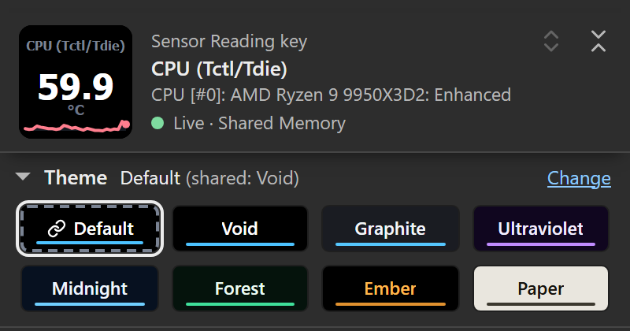
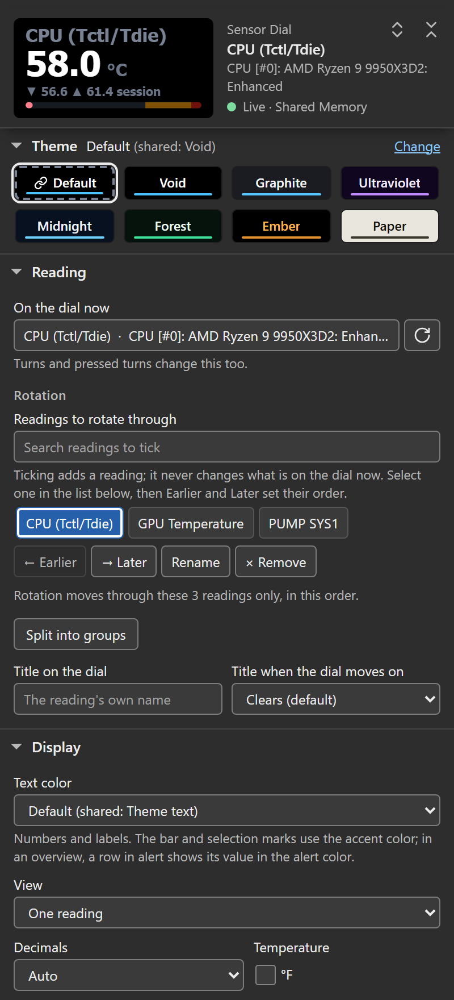
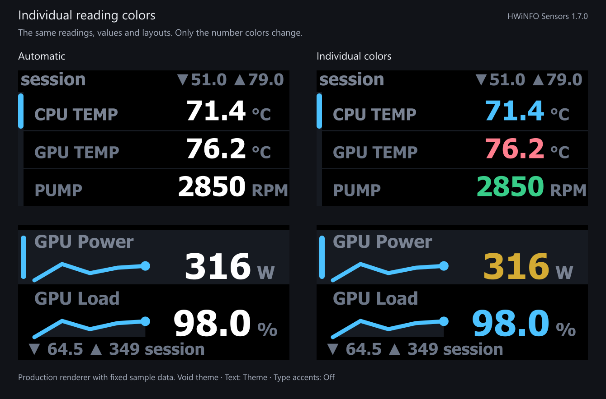
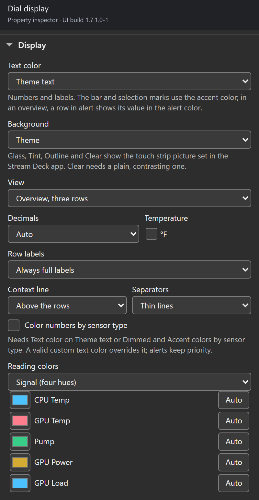
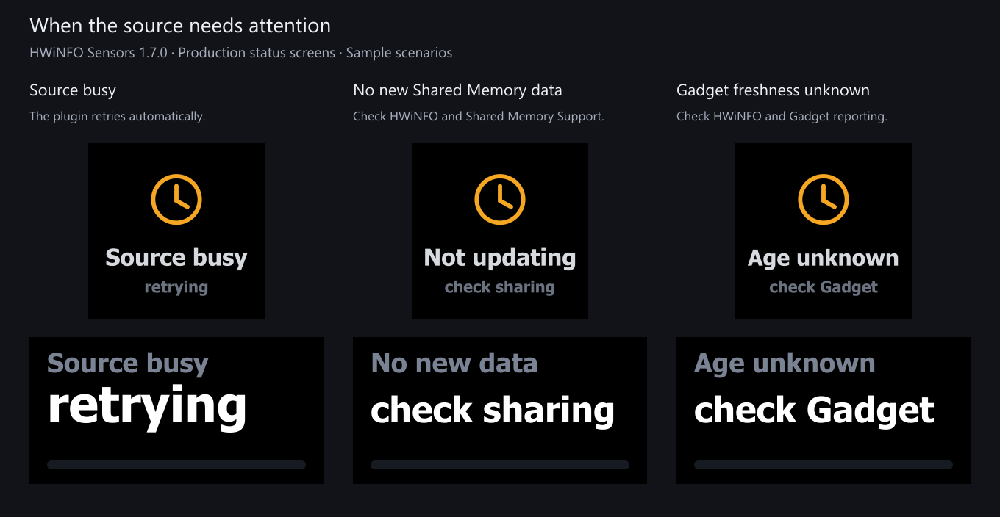

1.7.0.0 redesigns the settings panels, adds individual dial colors and changes how sources, identities and history are handled. The upgrade rewrites no stored settings. The tables below say where a change needs you to act; the changelog lists every change.
1.7.1
- Background under Display lets a Sensor Dial show the touch strip picture set in the Stream Deck app: Glass, Tint, Outline or Clear. Theme, the default, draws every dial as before. See Transparent background.
- Words in the accent color draws a see-through dial’s title and selected row in its accent color (Glass, Tint and Outline).
- A custom detail list keeps each label, color and tile on its own reading when a source link or a new Reading pick makes a listed key the key’s own reading. See Choosing the list.
UX improvements in the settings panels
The Sensor Reading, Sensor Dial and HWiNFO Control panels share one layout. On a key or dial, a header stays at the top while you scroll: the face exactly as the plugin last drew it, the reading’s name and source, and the data state, in the face’s own words when there is a problem: Live · Shared Memory, Not updating for 42 s or Age unknown.
Under the header, the theme strip opens on a first visit and folds like the sections. Its line names the theme the key draws and where it comes from, such as Default (shared: Void) with Change beside it. Eight chips follow: Default and the seven themes, each drawn in its own colors with its name on it. When a key’s own theme differs from the shared one, Make shared takes Change’s place: it makes that theme the shared theme and sets the key back to Default. Folded, the strip keeps the checked theme as a small chip in its own colors. See Themes.

Actual settings-panel capture using live HWiNFO readings in a mock Stream Deck host. This is not a photograph of the physical deck.
The sections follow: Reading, Display, Alerts, Press (Controls on a dial) and Advanced, which holds Shared defaults, Connection, Support and Configuration documents. The HWiNFO Control key has Command and Advanced.
- Folding. Reading and Display start open. A folded section’s title line summarizes what it holds. A section you open or fold stays that way on the next panel of the same kind (key, dial or Control key) while the plugin runs; after a Stream Deck app restart the defaults come back. The two chevron buttons at the top right of the header open or fold every section, and so does Alt-click on a section title. Folding writes nothing to your keys.
- Status and repairs. When something needs fixing, a message sits right under the header with the fix as a button: Check again, HWiNFO setup steps, Reload sensor list, Pick another reading, or Data source setting when Data source is set to one provider only. See Status screens.
- Reading list. The picker lists every reading; 1.6.0 stopped after 150 rows, so a later source such as the GPU only appeared when searched for. Arrow keys browse, Enter picks, and Tab or a click elsewhere closes the list without changing anything.
- Rotation on a dial. Tick readings under Readings to rotate through. The rotation shows as one list with the reading on the dial highlighted. Select a reading, then use Earlier, Later, Rename or Remove; at a group’s edge, Earlier and Later move it into the neighboring group. Split into groups, Add group and Merge back into one set manage rotation groups. Ticking a reading never changes the reading on the dial.
- Detail settings on a key. With A press set to open details, the Press section shows Readings per tile, Title tile text, Also go back from this key’s own position and Details list. See Sensor details.
- Second press. Replacing the shared settings document, removing a rotation group that holds readings, and a merge that drops group names or joins two or more groups of readings each ask for a second press.
- Nothing written on open. Opening a panel saves nothing, and an edit changes only the field it touched. A stored choice this version does not know shows as kept instead of being replaced.
- Keyboard and size. Every control has a name and a visible focus ring, fields and buttons are 28 px tall, small marks such as checkboxes have at least a 24 px target, and the panels reflow at 320 px wide without horizontal scrolling.
- Stream Deck app limits. The app keeps the Escape key and most of its own clicks from reaching a panel, so an open reading list also closes on a second click in its box and when the panel loses focus. Text typed just before you select another key is saved as the pointer leaves the panel.

Actual settings-panel capture using live HWiNFO readings in a mock Stream Deck host.
Renamed labels
Labels changed; the stored settings behind them did not.
| Before 1.7 | In 1.7 | Where |
|---|---|---|
| Deck default | Default | Theme chips, Text color |
| Deck theme, Deck text, Type accents | Theme, Text color, Accent colors | Advanced > Shared defaults (marked All keys and dials) |
| Poll every | Read every | Advanced > Connection |
| Sensor | Reading (key), On the dial now (dial) | Reading |
| Label | Label on the key, Title on the dial | Reading |
| Label mode | Title when the dial moves on | Reading (dial) |
| Layout | Readings on this key | Reading (key) |
| Show | Value shown | Display (key) |
| Display (sparkline, bar, ring) | Graph under the value | Display (key) |
| Bar min, Bar max | Bar from, Bar to | Display (dial) |
| Direction | Alert when the value drops to or below these numbers | Alerts |
| Controls, Rotate, Press+rotate | Gestures, Turn, Pressed turn | Controls (dial) |
| Reset reach | A stats reset clears | Controls (dial) |
| Press does | A press | Press (key) |
| Detail contains | Details list | Press (key) |
| Tile shows | Readings per tile | Press (key) |
| Detail title | Title tile text | Press (key) |
| Repeat Back under this key’s own cell | Also go back from this key’s own position | Press (key) |
| Second sensor, Third sensor, Fourth sensor | Reading 2, Reading 3, Reading 4 | Reading (key) |
| Second label, Third label, Fourth label | Label 2, Label 3, Label 4 | Reading (key) |
| Second shows | Row 2 shows | Reading (key) |
| Rotation set | Rotation, Readings to rotate through | Reading (dial) |
| On alert | Auto cycle jumps to a critical reading | Alerts (dial) |
| Add sensor | Add readings | Press (key) |
| Config: This key (This dial), Deck, Apply | This key’s settings (This dial’s settings), Shared settings, with Replace this key’s settings (Replace this dial’s settings) and Replace shared settings for Apply | Advanced > Configuration documents |
| First time? HWiNFO setup | HWiNFO setup steps | Advanced > Connection |
The Text color help says it colors the numbers and labels while graphs, bars and stat badges take the accent color, and the Accent colors help says which colors reach the numbers (issue #31).
What changes on your deck
| Change | What you see | What you need to do |
|---|---|---|
| Text font | Keys, dials and tiles keep Tahoma Bold, the font every release drew on the device, now measured for it, so labels shorten instead of running into their values. Text font under Advanced > Shared defaults switches reading keys, dials and detail tiles to Segoe UI, lighter and narrower. | No change; pick Segoe UI if you prefer it. |
| Individual dial colors | Two CPU/GPU temperature readings can have different number colors, even though both are temperatures. | Set the dial’s View to an overview, then open Display > Reading colors. Choose a preset or set each color. |
| Linked source selections | A saved reading, its name and its color can follow a switch between Shared Memory and Gadget. A pairing edit applies at once on every key, dial and tile. | Configure an explicit source link. Similar names are never paired automatically. |
| Gadget freshness | Age unknown replaces a claim that unchanged registry values are definitely stale. | Check HWiNFO and Gadget reporting. A steady value alone cannot prove the producer is running. |
| Gadget history | Key and detail MIN/MAX/AVG modes show N/A instead of presenting the current value as history. | Use Current, or enable Shared Memory for HWiNFO history. Dials have separate local statistics. |
| Gadget scan cost | The Gadget scan grows with the number of ticked readings: about 150 ms per poll with all 554 readings on my bench ticked (PERF.md, 2026-09-20). This corrects the 1.6.0 notes, which said the cost did not depend on the selection. | Tick only the readings you put on the deck. |
| Yes/No readings | A Yes/No reading shows Yes or No, as HWiNFO does, on keys, dials and tiles; 1.6.0 showed 0.00. Its Bar or Ring runs empty to full. | No change. Thresholds still compare 0 and 1. |
| Ambiguous Shared Memory identities | Readings with the same stable identity, or without a sensor owner, stay missing while healthy readings continue. | A saved unique identity recovers when the producer repairs it. Older duplicate-suffixed or ownerless selections need reselection; see the identity limits. |
| Shared Gadget names | Two ticked readings that share a source name and label are both withheld while both are ticked, instead of risking the wrong reading on a key. HWiNFO reports some readings twice under one name, such as a GPU fan in RPM and in percent, and a shift-click range ticks both. In 1.6.0 both showed, the second as a ~1 copy. | In HWiNFO, untick or relabel the one your key should not show, such as the percent of a GPU fan pair; the other comes back on its own. A key that 1.6.0 saved on the plain name was on the first of the two in HWiNFO’s order. A key saved on a 1.6.0 ~1 copy needs one reselection. |
| Old Gadget selections | Most Gadget selections saved by 1.6.0 keep working through a checked alias of their old key. | Reselect a reading whose label reads exactly Reading 0 to Reading 1023, whose source name or label contains any literal tilde (~), or whose old key carried the ~n duplicate suffix. An old key that now matches two readings stays unresolved while ambiguous. See the source guide. |
| Sparklines and local statistics | Subsecond changes can enter the graph. Observed data gaps and source, unit or type changes end the old history segment; a dial says stats reset: data gap once when live data returns. | No setup change. A fresh segment after a gap is expected. |
| Units on the device | The Stream Deck app dropped the space before a unit (“59.7°C”). Dual keys and dials now draw it (“59.7 °C”) unless it would shrink a value; three-row keys keep units tight so their labels keep the room. A three-row overview dial no longer cuts Mbps, Gbps, MB/s or MT/s at the screen edge. | None. |
| Alerts and contrast | Built-in value, unit and numeric statistic colors meet a 4.5:1 authored contrast floor, and Dim keeps labels at least as readable as units. | Check your custom colors on the actual display. Individually chosen reading, quad cell and tile colors are kept as entered in Theme mode and only dimmed in Dim mode; a Custom Text color stays exact. |
If you used the 1.6.92 color preview, the color wells and presets are already familiar; they now sit in the redesigned Display section. The new work over that preview is the settings-panel redesign, source-link color inheritance, the reliability behavior above, and the contrast and alert changes. Upgrading from 1.6.0 adds all of it.
Set the colors you want
Signal cycles through four hues. Pairs groups neighboring readings. Uniform uses one hue. You can then change any individual color. Auto removes that reading’s override, and the Automatic preset clears the color of every reading in the list.

Production dial renderer with fixed sample readings and generated histories. The layouts and values are identical on both sides; only number colors change.

Actual settings-panel capture using live HWiNFO readings in a mock Stream Deck host. This is not a photograph of the physical deck.
Colors follow reading identity through rotation and reordering. On a confirmed source link, an exact color for the displayed key wins; otherwise its linked key’s color is used. Alerts take priority, followed by valid Custom Text. See dial color settings.
Why a reading may now show less
The plugin should not label a current value as an average or choose between two readings with the same Gadget name. Those cases now show unavailable history, or withhold both readings while they share the name. Shared Memory remains the preferred source because it supplies hardware identifiers, history and a consistency mutex.

Production status renderers with controlled failure scenarios. These are rendered examples, not measurements from a hardware fault test.
Gadget rereads each row to catch fields that change during a scan, and a row whose formatted value keeps contradicting its raw value is withheld on its own while the other rows keep working (the plugin log names the slot). That catches some partial writes; it does not make the registry an atomic source. The source guide explains the remaining limits and pairing steps.
What the review caught
An adversarial review found a dial-history gap: select reading A, rotate to B, let A disappear and return, then rotate back. A’s old MIN/MAX could survive. Retained sessions now check for missing or invalid readings and source, unit or type changes, or a saved key that comes to stand for another measurement, while another reading is selected. Ordinary rotation still preserves the session and does not count unseen values as new samples.
Regression tests cover those cases. They establish software behavior, not physical readability or long-run stability; the hardware page lists what ran on which device and when.